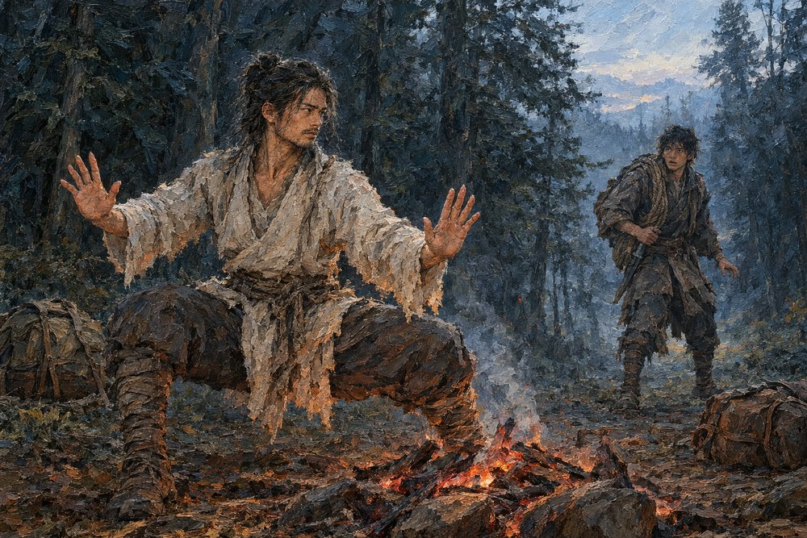

Record 7 of 11
In the hollow three ridges east, Bai Rong turns from the dying fire into the Founder's Welcome as Shen Lie reaches the clearing with a rope for restraint and a blade for emergencies only
A bearded man in a ragged pale tunic crouches low in a pine forest with both palms turned outward beside a dying fire, while a younger man with a rope slung over his shoulder and a hand on a blade stops in the trees behind him.